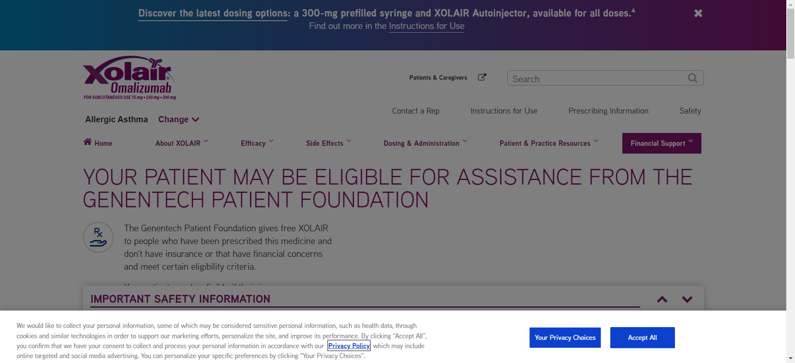
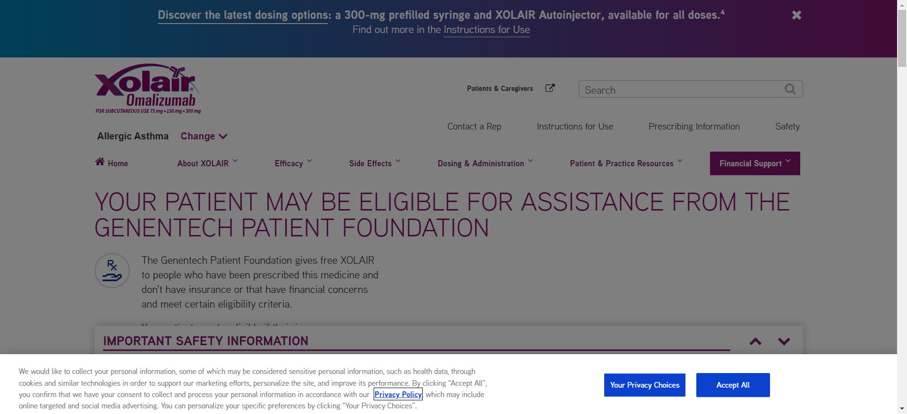
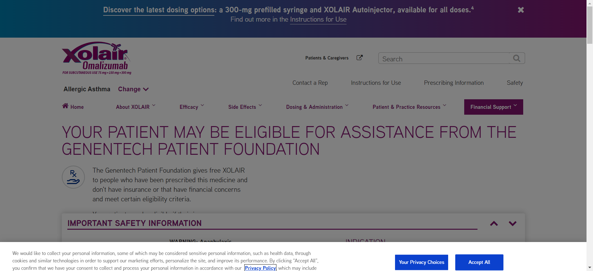
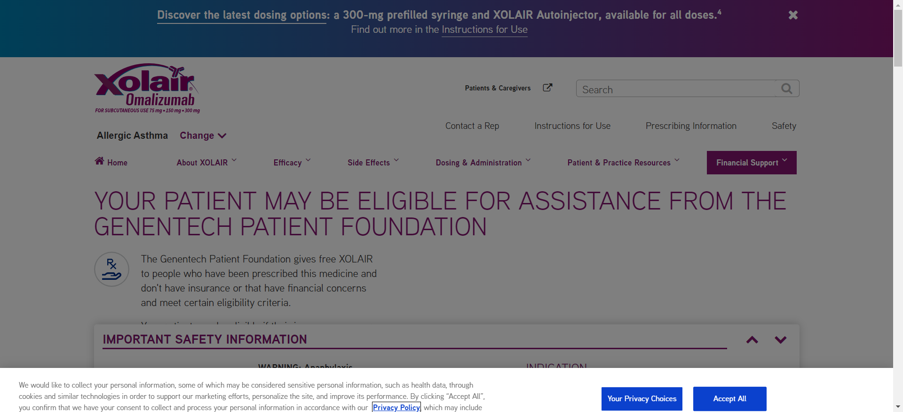
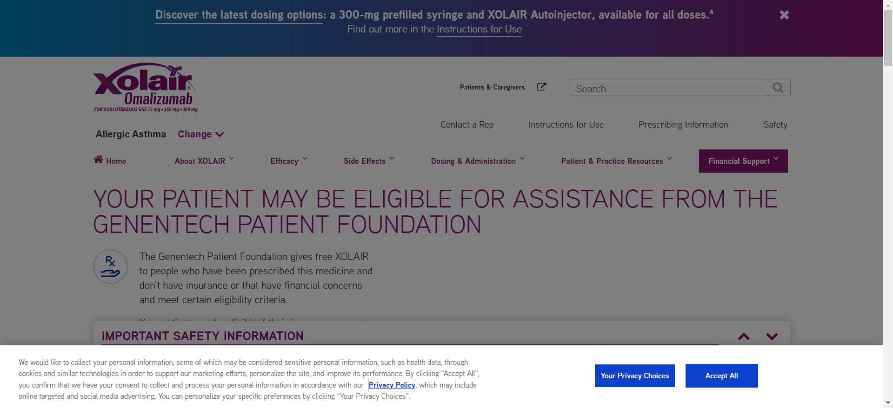
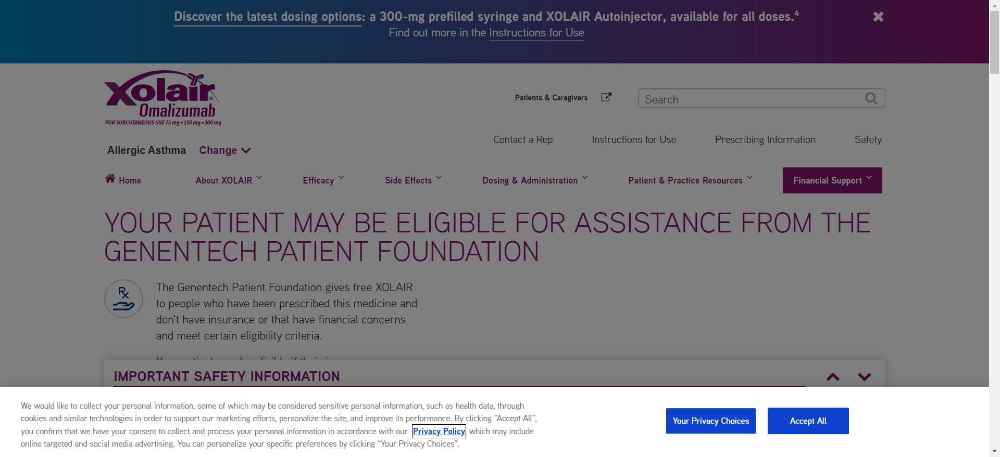

-
chrome-HouseHoldIncomeVerification-getInputExcelSheetData
7:16:56 pm / 00:00:00:529 Pass
chrome-HouseHoldIncomeVerification-getInputExcelSheetData
01.05.2024 7:16:56 pm 01.05.2024 7:16:56 pm 00:00:00:529 · #test-id=1HouseHoldIncomeVerificationThe Extent Report for:HouseHoldIncomeVerificationStatus Timestamp Details Info 7:16:56 pm Test Started! Info 7:16:56 pm GET WebDriver instance Info 7:16:56 pm GET WebDriver instance Pass 7:16:56 pm Read test data sheet datasheet_HouseHoldIncomeVerification.xlsx Pass 7:16:56 pm Get row count from excel sheet. Pass 7:16:56 pm Get data from excel sheet. Pass 7:16:56 pm Get row count from excel sheet. Pass 7:16:56 pm Get data from excel sheet. Pass 7:16:56 pm Get row count from excel sheet. -
chrome-HouseHoldIncomeVerification-loginToEnvironment
7:16:56 pm / 00:00:32:361 Pass
chrome-HouseHoldIncomeVerification-loginToEnvironment
01.05.2024 7:16:56 pm 01.05.2024 7:17:29 pm 00:00:32:361 · #test-id=2HouseHoldIncomeVerificationThe Extent Report for:HouseHoldIncomeVerificationStatus Timestamp Details Info 7:16:56 pm Test Started! Info 7:16:56 pm GET WebDriver instance Info 7:16:58 pm Page navigates to https://uat-rituxan-core.gene.com/ Pass 7:17:01 pm Send khergadv to Decorated {[[ChromeDriver: chrome on windows (ba1aae64bf8f70bf336d5ef9c412ab56)] -> id: identifierInput]} Pass 7:17:13 pm Click Proxy element for: DefaultElementLocator 'By.id: submitBtn' Pass 7:17:13 pm Send VishTester!1706 to Decorated {[[ChromeDriver: chrome on windows (ba1aae64bf8f70bf336d5ef9c412ab56)] -> xpath: .//input[@id='password']]} Info 7:17:29 pm Refreshed the Window. -
chrome-HouseHoldIncomeVerification-verifyJsonValues
7:17:41 pm / 00:30:14:162 Fail
chrome-HouseHoldIncomeVerification-verifyJsonValues
01.05.2024 7:17:41 pm 01.05.2024 7:47:55 pm 00:30:14:162 · #test-id=3HouseHoldIncomeVerificationThe Extent Report for:HouseHoldIncomeVerification


 



 



 



Status Timestamp Details Info 7:17:41 pm Test Started! Info 7:17:41 pm GET WebDriver instance Info 7:17:41 pm GET WebDriver instance Info 7:17:41 pm All Cookies have been cleaned.... Info 7:17:49 pm Page navigates to https://uat-xolairhcp-core.gene.com/allergic-asthma/financial-support/tool/gpf-financial-eligibility.html Info 7:18:13 pm GET WebDriver instance Info 7:18:13 pm All Cookies have been cleaned.... Fail 7:18:19 pm org.openqa.selenium.WebDriverException: no such execution context (Session info: chrome=120.0.6099.130) Build info: version: '4.14.1', revision: '03f8ede370' System info: os.name: 'Windows 10', os.arch: 'amd64', os.version: '10.0', java.version: '19.0.1' Driver info: org.openqa.selenium.chrome.ChromeDriver Command: [ba1aae64bf8f70bf336d5ef9c412ab56, get {url=https://uat-xolairhcp-core.gene.com/allergic-asthma/financial-support/tool/gpf-financial-eligibility.html}] Capabilities {acceptInsecureCerts: true, browserName: chrome, browserVersion: 120.0.6099.130, chrome: {chromedriverVersion: 120.0.6099.109 (3419140ab66..., userDataDir: C:\Users\VISHAK~1.KHE\AppDa...}, fedcm:accounts: true, goog:chromeOptions: {debuggerAddress: localhost:52227}, networkConnectionEnabled: false, pageLoadStrategy: normal, platformName: windows, proxy: Proxy(), se:cdp: ws://localhost:52227/devtoo..., se:cdpVersion: 120.0.6099.130, setWindowRect: true, strictFileInteractability: false, timeouts: {implicit: 0, pageLoad: 300000, script: 30000}, unhandledPromptBehavior: dismiss and notify, webauthn:extension:credBlob: true, webauthn:extension:largeBlob: true, webauthn:extension:minPinLength: true, webauthn:extension:prf: true, webauthn:virtualAuthenticators: true} Session ID: ba1aae64bf8f70bf336d5ef9c412ab56 Screencast below: com.aventstack.extentreports.ExtentTest@3cd46491 Info 7:18:29 pm GET WebDriver instance Info 7:18:29 pm All Cookies have been cleaned.... Fail 7:18:40 pm org.openqa.selenium.WebDriverException: no such execution context (Session info: chrome=120.0.6099.130) Build info: version: '4.14.1', revision: '03f8ede370' System info: os.name: 'Windows 10', os.arch: 'amd64', os.version: '10.0', java.version: '19.0.1' Driver info: org.openqa.selenium.chrome.ChromeDriver Command: [ba1aae64bf8f70bf336d5ef9c412ab56, get {url=https://uat-xolairhcp-core.gene.com/allergic-asthma/financial-support/tool/gpf-financial-eligibility.html}] Capabilities {acceptInsecureCerts: true, browserName: chrome, browserVersion: 120.0.6099.130, chrome: {chromedriverVersion: 120.0.6099.109 (3419140ab66..., userDataDir: C:\Users\VISHAK~1.KHE\AppDa...}, fedcm:accounts: true, goog:chromeOptions: {debuggerAddress: localhost:52227}, networkConnectionEnabled: false, pageLoadStrategy: normal, platformName: windows, proxy: Proxy(), se:cdp: ws://localhost:52227/devtoo..., se:cdpVersion: 120.0.6099.130, setWindowRect: true, strictFileInteractability: false, timeouts: {implicit: 0, pageLoad: 300000, script: 30000}, unhandledPromptBehavior: dismiss and notify, webauthn:extension:credBlob: true, webauthn:extension:largeBlob: true, webauthn:extension:minPinLength: true, webauthn:extension:prf: true, webauthn:virtualAuthenticators: true} Session ID: ba1aae64bf8f70bf336d5ef9c412ab56 Screencast below: com.aventstack.extentreports.ExtentTest@3cd46491 Info 7:18:51 pm GET WebDriver instance Info 7:18:52 pm All Cookies have been cleaned.... Info 7:19:00 pm Page navigates to https://uat-xolairhcp-core.gene.com/allergic-asthma/financial-support/tool/gpf-financial-eligibility.html Info 7:19:10 pm GET WebDriver instance Info 7:19:11 pm All Cookies have been cleaned.... Info 7:19:20 pm Page navigates to https://uat-xolairhcp-core.gene.com/allergic-asthma/financial-support/tool/gpf-financial-eligibility.html Info 7:19:31 pm GET WebDriver instance Info 7:19:32 pm All Cookies have been cleaned.... Fail 7:19:41 pm org.openqa.selenium.WebDriverException: no such execution context (Session info: chrome=120.0.6099.130) Build info: version: '4.14.1', revision: '03f8ede370' System info: os.name: 'Windows 10', os.arch: 'amd64', os.version: '10.0', java.version: '19.0.1' Driver info: org.openqa.selenium.chrome.ChromeDriver Command: [ba1aae64bf8f70bf336d5ef9c412ab56, get {url=https://uat-xolairhcp-core.gene.com/allergic-asthma/financial-support/tool/gpf-financial-eligibility.html}] Capabilities {acceptInsecureCerts: true, browserName: chrome, browserVersion: 120.0.6099.130, chrome: {chromedriverVersion: 120.0.6099.109 (3419140ab66..., userDataDir: C:\Users\VISHAK~1.KHE\AppDa...}, fedcm:accounts: true, goog:chromeOptions: {debuggerAddress: localhost:52227}, networkConnectionEnabled: false, pageLoadStrategy: normal, platformName: windows, proxy: Proxy(), se:cdp: ws://localhost:52227/devtoo..., se:cdpVersion: 120.0.6099.130, setWindowRect: true, strictFileInteractability: false, timeouts: {implicit: 0, pageLoad: 300000, script: 30000}, unhandledPromptBehavior: dismiss and notify, webauthn:extension:credBlob: true, webauthn:extension:largeBlob: true, webauthn:extension:minPinLength: true, webauthn:extension:prf: true, webauthn:virtualAuthenticators: true} Session ID: ba1aae64bf8f70bf336d5ef9c412ab56 Screencast below: com.aventstack.extentreports.ExtentTest@3cd46491 Info 7:19:54 pm GET WebDriver instance Info 7:19:54 pm All Cookies have been cleaned.... Info 7:20:05 pm Page navigates to https://uat-xolairhcp-core.gene.com/allergic-asthma/financial-support/tool/gpf-financial-eligibility.html Info 7:20:20 pm GET WebDriver instance Info 7:20:20 pm All Cookies have been cleaned.... Fail 7:20:30 pm org.openqa.selenium.WebDriverException: no such execution context (Session info: chrome=120.0.6099.130) Build info: version: '4.14.1', revision: '03f8ede370' System info: os.name: 'Windows 10', os.arch: 'amd64', os.version: '10.0', java.version: '19.0.1' Driver info: org.openqa.selenium.chrome.ChromeDriver Command: [ba1aae64bf8f70bf336d5ef9c412ab56, get {url=https://uat-xolairhcp-core.gene.com/allergic-asthma/financial-support/tool/gpf-financial-eligibility.html}] Capabilities {acceptInsecureCerts: true, browserName: chrome, browserVersion: 120.0.6099.130, chrome: {chromedriverVersion: 120.0.6099.109 (3419140ab66..., userDataDir: C:\Users\VISHAK~1.KHE\AppDa...}, fedcm:accounts: true, goog:chromeOptions: {debuggerAddress: localhost:52227}, networkConnectionEnabled: false, pageLoadStrategy: normal, platformName: windows, proxy: Proxy(), se:cdp: ws://localhost:52227/devtoo..., se:cdpVersion: 120.0.6099.130, setWindowRect: true, strictFileInteractability: false, timeouts: {implicit: 0, pageLoad: 300000, script: 30000}, unhandledPromptBehavior: dismiss and notify, webauthn:extension:credBlob: true, webauthn:extension:largeBlob: true, webauthn:extension:minPinLength: true, webauthn:extension:prf: true, webauthn:virtualAuthenticators: true} Session ID: ba1aae64bf8f70bf336d5ef9c412ab56 Screencast below: com.aventstack.extentreports.ExtentTest@3cd46491 Info 7:20:43 pm GET WebDriver instance Info 7:20:43 pm All Cookies have been cleaned.... Fail 7:20:52 pm org.openqa.selenium.WebDriverException: no such execution context (Session info: chrome=120.0.6099.130) Build info: version: '4.14.1', revision: '03f8ede370' System info: os.name: 'Windows 10', os.arch: 'amd64', os.version: '10.0', java.version: '19.0.1' Driver info: org.openqa.selenium.chrome.ChromeDriver Command: [ba1aae64bf8f70bf336d5ef9c412ab56, get {url=https://uat-xolairhcp-core.gene.com/allergic-asthma/financial-support/tool/gpf-financial-eligibility.html}] Capabilities {acceptInsecureCerts: true, browserName: chrome, browserVersion: 120.0.6099.130, chrome: {chromedriverVersion: 120.0.6099.109 (3419140ab66..., userDataDir: C:\Users\VISHAK~1.KHE\AppDa...}, fedcm:accounts: true, goog:chromeOptions: {debuggerAddress: localhost:52227}, networkConnectionEnabled: false, pageLoadStrategy: normal, platformName: windows, proxy: Proxy(), se:cdp: ws://localhost:52227/devtoo..., se:cdpVersion: 120.0.6099.130, setWindowRect: true, strictFileInteractability: false, timeouts: {implicit: 0, pageLoad: 300000, script: 30000}, unhandledPromptBehavior: dismiss and notify, webauthn:extension:credBlob: true, webauthn:extension:largeBlob: true, webauthn:extension:minPinLength: true, webauthn:extension:prf: true, webauthn:virtualAuthenticators: true} Session ID: ba1aae64bf8f70bf336d5ef9c412ab56 Screencast below: com.aventstack.extentreports.ExtentTest@3cd46491 Info 7:21:03 pm GET WebDriver instance Info 7:21:03 pm All Cookies have been cleaned.... Fail 7:21:13 pm org.openqa.selenium.WebDriverException: no such execution context (Session info: chrome=120.0.6099.130) Build info: version: '4.14.1', revision: '03f8ede370' System info: os.name: 'Windows 10', os.arch: 'amd64', os.version: '10.0', java.version: '19.0.1' Driver info: org.openqa.selenium.chrome.ChromeDriver Command: [ba1aae64bf8f70bf336d5ef9c412ab56, get {url=https://uat-xolairhcp-core.gene.com/allergic-asthma/financial-support/tool/gpf-financial-eligibility.html}] Capabilities {acceptInsecureCerts: true, browserName: chrome, browserVersion: 120.0.6099.130, chrome: {chromedriverVersion: 120.0.6099.109 (3419140ab66..., userDataDir: C:\Users\VISHAK~1.KHE\AppDa...}, fedcm:accounts: true, goog:chromeOptions: {debuggerAddress: localhost:52227}, networkConnectionEnabled: false, pageLoadStrategy: normal, platformName: windows, proxy: Proxy(), se:cdp: ws://localhost:52227/devtoo..., se:cdpVersion: 120.0.6099.130, setWindowRect: true, strictFileInteractability: false, timeouts: {implicit: 0, pageLoad: 300000, script: 30000}, unhandledPromptBehavior: dismiss and notify, webauthn:extension:credBlob: true, webauthn:extension:largeBlob: true, webauthn:extension:minPinLength: true, webauthn:extension:prf: true, webauthn:virtualAuthenticators: true} Session ID: ba1aae64bf8f70bf336d5ef9c412ab56 Screencast below: com.aventstack.extentreports.ExtentTest@3cd46491 Info 7:21:23 pm GET WebDriver instance Info 7:21:23 pm All Cookies have been cleaned.... Fail 7:21:30 pm org.openqa.selenium.WebDriverException: no such execution context (Session info: chrome=120.0.6099.130) Build info: version: '4.14.1', revision: '03f8ede370' System info: os.name: 'Windows 10', os.arch: 'amd64', os.version: '10.0', java.version: '19.0.1' Driver info: org.openqa.selenium.chrome.ChromeDriver Command: [ba1aae64bf8f70bf336d5ef9c412ab56, get {url=https://uat-xolairhcp-core.gene.com/allergic-asthma/financial-support/tool/gpf-financial-eligibility.html}] Capabilities {acceptInsecureCerts: true, browserName: chrome, browserVersion: 120.0.6099.130, chrome: {chromedriverVersion: 120.0.6099.109 (3419140ab66..., userDataDir: C:\Users\VISHAK~1.KHE\AppDa...}, fedcm:accounts: true, goog:chromeOptions: {debuggerAddress: localhost:52227}, networkConnectionEnabled: false, pageLoadStrategy: normal, platformName: windows, proxy: Proxy(), se:cdp: ws://localhost:52227/devtoo..., se:cdpVersion: 120.0.6099.130, setWindowRect: true, strictFileInteractability: false, timeouts: {implicit: 0, pageLoad: 300000, script: 30000}, unhandledPromptBehavior: dismiss and notify, webauthn:extension:credBlob: true, webauthn:extension:largeBlob: true, webauthn:extension:minPinLength: true, webauthn:extension:prf: true, webauthn:virtualAuthenticators: true} Session ID: ba1aae64bf8f70bf336d5ef9c412ab56 Screencast below: com.aventstack.extentreports.ExtentTest@3cd46491 Info 7:21:42 pm GET WebDriver instance Info 7:21:42 pm All Cookies have been cleaned.... Fail 7:21:47 pm org.openqa.selenium.WebDriverException: no such execution context (Session info: chrome=120.0.6099.130) Build info: version: '4.14.1', revision: '03f8ede370' System info: os.name: 'Windows 10', os.arch: 'amd64', os.version: '10.0', java.version: '19.0.1' Driver info: org.openqa.selenium.chrome.ChromeDriver Command: [ba1aae64bf8f70bf336d5ef9c412ab56, get {url=https://uat-xolairhcp-core.gene.com/allergic-asthma/financial-support/tool/gpf-financial-eligibility.html}] Capabilities {acceptInsecureCerts: true, browserName: chrome, browserVersion: 120.0.6099.130, chrome: {chromedriverVersion: 120.0.6099.109 (3419140ab66..., userDataDir: C:\Users\VISHAK~1.KHE\AppDa...}, fedcm:accounts: true, goog:chromeOptions: {debuggerAddress: localhost:52227}, networkConnectionEnabled: false, pageLoadStrategy: normal, platformName: windows, proxy: Proxy(), se:cdp: ws://localhost:52227/devtoo..., se:cdpVersion: 120.0.6099.130, setWindowRect: true, strictFileInteractability: false, timeouts: {implicit: 0, pageLoad: 300000, script: 30000}, unhandledPromptBehavior: dismiss and notify, webauthn:extension:credBlob: true, webauthn:extension:largeBlob: true, webauthn:extension:minPinLength: true, webauthn:extension:prf: true, webauthn:virtualAuthenticators: true} Session ID: ba1aae64bf8f70bf336d5ef9c412ab56 Screencast below: com.aventstack.extentreports.ExtentTest@3cd46491 Info 7:21:53 pm GET WebDriver instance Info 7:21:54 pm All Cookies have been cleaned.... Info 7:22:00 pm Page navigates to https://uat-xolairhcp-core.gene.com/allergic-asthma/financial-support/tool/gpf-financial-eligibility.html Info 7:22:12 pm GET WebDriver instance Info 7:22:13 pm All Cookies have been cleaned.... Fail 7:22:22 pm org.openqa.selenium.WebDriverException: no such execution context (Session info: chrome=120.0.6099.130) Build info: version: '4.14.1', revision: '03f8ede370' System info: os.name: 'Windows 10', os.arch: 'amd64', os.version: '10.0', java.version: '19.0.1' Driver info: org.openqa.selenium.chrome.ChromeDriver Command: [ba1aae64bf8f70bf336d5ef9c412ab56, get {url=https://uat-xolairhcp-core.gene.com/allergic-asthma/financial-support/tool/gpf-financial-eligibility.html}] Capabilities {acceptInsecureCerts: true, browserName: chrome, browserVersion: 120.0.6099.130, chrome: {chromedriverVersion: 120.0.6099.109 (3419140ab66..., userDataDir: C:\Users\VISHAK~1.KHE\AppDa...}, fedcm:accounts: true, goog:chromeOptions: {debuggerAddress: localhost:52227}, networkConnectionEnabled: false, pageLoadStrategy: normal, platformName: windows, proxy: Proxy(), se:cdp: ws://localhost:52227/devtoo..., se:cdpVersion: 120.0.6099.130, setWindowRect: true, strictFileInteractability: false, timeouts: {implicit: 0, pageLoad: 300000, script: 30000}, unhandledPromptBehavior: dismiss and notify, webauthn:extension:credBlob: true, webauthn:extension:largeBlob: true, webauthn:extension:minPinLength: true, webauthn:extension:prf: true, webauthn:virtualAuthenticators: true} Session ID: ba1aae64bf8f70bf336d5ef9c412ab56 Screencast below: com.aventstack.extentreports.ExtentTest@3cd46491 Info 7:22:30 pm GET WebDriver instance Info 7:22:30 pm All Cookies have been cleaned.... Info 7:22:42 pm Page navigates to https://uat-xolairhcp-core.gene.com/allergic-asthma/financial-support/tool/gpf-financial-eligibility.html Info 7:22:55 pm GET WebDriver instance Info 7:22:55 pm All Cookies have been cleaned.... Fail 7:23:02 pm org.openqa.selenium.WebDriverException: no such execution context (Session info: chrome=120.0.6099.130) Build info: version: '4.14.1', revision: '03f8ede370' System info: os.name: 'Windows 10', os.arch: 'amd64', os.version: '10.0', java.version: '19.0.1' Driver info: org.openqa.selenium.chrome.ChromeDriver Command: [ba1aae64bf8f70bf336d5ef9c412ab56, get {url=https://uat-xolairhcp-core.gene.com/allergic-asthma/financial-support/tool/gpf-financial-eligibility.html}] Capabilities {acceptInsecureCerts: true, browserName: chrome, browserVersion: 120.0.6099.130, chrome: {chromedriverVersion: 120.0.6099.109 (3419140ab66..., userDataDir: C:\Users\VISHAK~1.KHE\AppDa...}, fedcm:accounts: true, goog:chromeOptions: {debuggerAddress: localhost:52227}, networkConnectionEnabled: false, pageLoadStrategy: normal, platformName: windows, proxy: Proxy(), se:cdp: ws://localhost:52227/devtoo..., se:cdpVersion: 120.0.6099.130, setWindowRect: true, strictFileInteractability: false, timeouts: {implicit: 0, pageLoad: 300000, script: 30000}, unhandledPromptBehavior: dismiss and notify, webauthn:extension:credBlob: true, webauthn:extension:largeBlob: true, webauthn:extension:minPinLength: true, webauthn:extension:prf: true, webauthn:virtualAuthenticators: true} Session ID: ba1aae64bf8f70bf336d5ef9c412ab56 Screencast below: com.aventstack.extentreports.ExtentTest@3cd46491 Info 7:23:13 pm GET WebDriver instance Info 7:23:13 pm All Cookies have been cleaned.... Fail 7:23:24 pm org.openqa.selenium.WebDriverException: no such execution context (Session info: chrome=120.0.6099.130) Build info: version: '4.14.1', revision: '03f8ede370' System info: os.name: 'Windows 10', os.arch: 'amd64', os.version: '10.0', java.version: '19.0.1' Driver info: org.openqa.selenium.chrome.ChromeDriver Command: [ba1aae64bf8f70bf336d5ef9c412ab56, get {url=https://uat-xolairhcp-core.gene.com/allergic-asthma/financial-support/tool/gpf-financial-eligibility.html}] Capabilities {acceptInsecureCerts: true, browserName: chrome, browserVersion: 120.0.6099.130, chrome: {chromedriverVersion: 120.0.6099.109 (3419140ab66..., userDataDir: C:\Users\VISHAK~1.KHE\AppDa...}, fedcm:accounts: true, goog:chromeOptions: {debuggerAddress: localhost:52227}, networkConnectionEnabled: false, pageLoadStrategy: normal, platformName: windows, proxy: Proxy(), se:cdp: ws://localhost:52227/devtoo..., se:cdpVersion: 120.0.6099.130, setWindowRect: true, strictFileInteractability: false, timeouts: {implicit: 0, pageLoad: 300000, script: 30000}, unhandledPromptBehavior: dismiss and notify, webauthn:extension:credBlob: true, webauthn:extension:largeBlob: true, webauthn:extension:minPinLength: true, webauthn:extension:prf: true, webauthn:virtualAuthenticators: true} Session ID: ba1aae64bf8f70bf336d5ef9c412ab56 Screencast below: com.aventstack.extentreports.ExtentTest@3cd46491 Info 7:23:35 pm GET WebDriver instance Info 7:23:36 pm All Cookies have been cleaned.... Fail 7:23:45 pm org.openqa.selenium.WebDriverException: no such execution context (Session info: chrome=120.0.6099.130) Build info: version: '4.14.1', revision: '03f8ede370' System info: os.name: 'Windows 10', os.arch: 'amd64', os.version: '10.0', java.version: '19.0.1' Driver info: org.openqa.selenium.chrome.ChromeDriver Command: [ba1aae64bf8f70bf336d5ef9c412ab56, get {url=https://uat-xolairhcp-core.gene.com/allergic-asthma/financial-support/tool/gpf-financial-eligibility.html}] Capabilities {acceptInsecureCerts: true, browserName: chrome, browserVersion: 120.0.6099.130, chrome: {chromedriverVersion: 120.0.6099.109 (3419140ab66..., userDataDir: C:\Users\VISHAK~1.KHE\AppDa...}, fedcm:accounts: true, goog:chromeOptions: {debuggerAddress: localhost:52227}, networkConnectionEnabled: false, pageLoadStrategy: normal, platformName: windows, proxy: Proxy(), se:cdp: ws://localhost:52227/devtoo..., se:cdpVersion: 120.0.6099.130, setWindowRect: true, strictFileInteractability: false, timeouts: {implicit: 0, pageLoad: 300000, script: 30000}, unhandledPromptBehavior: dismiss and notify, webauthn:extension:credBlob: true, webauthn:extension:largeBlob: true, webauthn:extension:minPinLength: true, webauthn:extension:prf: true, webauthn:virtualAuthenticators: true} Session ID: ba1aae64bf8f70bf336d5ef9c412ab56 Screencast below: com.aventstack.extentreports.ExtentTest@3cd46491 Info 7:24:00 pm GET WebDriver instance Info 7:24:00 pm All Cookies have been cleaned.... Fail 7:24:16 pm org.openqa.selenium.WebDriverException: no such execution context (Session info: chrome=120.0.6099.130) Build info: version: '4.14.1', revision: '03f8ede370' System info: os.name: 'Windows 10', os.arch: 'amd64', os.version: '10.0', java.version: '19.0.1' Driver info: org.openqa.selenium.chrome.ChromeDriver Command: [ba1aae64bf8f70bf336d5ef9c412ab56, get {url=https://uat-xolairhcp-core.gene.com/allergic-asthma/financial-support/tool/gpf-financial-eligibility.html}] Capabilities {acceptInsecureCerts: true, browserName: chrome, browserVersion: 120.0.6099.130, chrome: {chromedriverVersion: 120.0.6099.109 (3419140ab66..., userDataDir: C:\Users\VISHAK~1.KHE\AppDa...}, fedcm:accounts: true, goog:chromeOptions: {debuggerAddress: localhost:52227}, networkConnectionEnabled: false, pageLoadStrategy: normal, platformName: windows, proxy: Proxy(), se:cdp: ws://localhost:52227/devtoo..., se:cdpVersion: 120.0.6099.130, setWindowRect: true, strictFileInteractability: false, timeouts: {implicit: 0, pageLoad: 300000, script: 30000}, unhandledPromptBehavior: dismiss and notify, webauthn:extension:credBlob: true, webauthn:extension:largeBlob: true, webauthn:extension:minPinLength: true, webauthn:extension:prf: true, webauthn:virtualAuthenticators: true} Session ID: ba1aae64bf8f70bf336d5ef9c412ab56 Screencast below: com.aventstack.extentreports.ExtentTest@3cd46491 Info 7:24:24 pm GET WebDriver instance Info 7:24:24 pm All Cookies have been cleaned.... Fail 7:24:39 pm org.openqa.selenium.WebDriverException: no such execution context (Session info: chrome=120.0.6099.130) Build info: version: '4.14.1', revision: '03f8ede370' System info: os.name: 'Windows 10', os.arch: 'amd64', os.version: '10.0', java.version: '19.0.1' Driver info: org.openqa.selenium.chrome.ChromeDriver Command: [ba1aae64bf8f70bf336d5ef9c412ab56, get {url=https://uat-xolairhcp-core.gene.com/allergic-asthma/financial-support/tool/gpf-financial-eligibility.html}] Capabilities {acceptInsecureCerts: true, browserName: chrome, browserVersion: 120.0.6099.130, chrome: {chromedriverVersion: 120.0.6099.109 (3419140ab66..., userDataDir: C:\Users\VISHAK~1.KHE\AppDa...}, fedcm:accounts: true, goog:chromeOptions: {debuggerAddress: localhost:52227}, networkConnectionEnabled: false, pageLoadStrategy: normal, platformName: windows, proxy: Proxy(), se:cdp: ws://localhost:52227/devtoo..., se:cdpVersion: 120.0.6099.130, setWindowRect: true, strictFileInteractability: false, timeouts: {implicit: 0, pageLoad: 300000, script: 30000}, unhandledPromptBehavior: dismiss and notify, webauthn:extension:credBlob: true, webauthn:extension:largeBlob: true, webauthn:extension:minPinLength: true, webauthn:extension:prf: true, webauthn:virtualAuthenticators: true} Session ID: ba1aae64bf8f70bf336d5ef9c412ab56 Screencast below: com.aventstack.extentreports.ExtentTest@3cd46491 Info 7:24:56 pm GET WebDriver instance Info 7:24:57 pm All Cookies have been cleaned.... Fail 7:25:10 pm org.openqa.selenium.WebDriverException: no such execution context (Session info: chrome=120.0.6099.130) Build info: version: '4.14.1', revision: '03f8ede370' System info: os.name: 'Windows 10', os.arch: 'amd64', os.version: '10.0', java.version: '19.0.1' Driver info: org.openqa.selenium.chrome.ChromeDriver Command: [ba1aae64bf8f70bf336d5ef9c412ab56, get {url=https://uat-xolairhcp-core.gene.com/allergic-asthma/financial-support/tool/gpf-financial-eligibility.html}] Capabilities {acceptInsecureCerts: true, browserName: chrome, browserVersion: 120.0.6099.130, chrome: {chromedriverVersion: 120.0.6099.109 (3419140ab66..., userDataDir: C:\Users\VISHAK~1.KHE\AppDa...}, fedcm:accounts: true, goog:chromeOptions: {debuggerAddress: localhost:52227}, networkConnectionEnabled: false, pageLoadStrategy: normal, platformName: windows, proxy: Proxy(), se:cdp: ws://localhost:52227/devtoo..., se:cdpVersion: 120.0.6099.130, setWindowRect: true, strictFileInteractability: false, timeouts: {implicit: 0, pageLoad: 300000, script: 30000}, unhandledPromptBehavior: dismiss and notify, webauthn:extension:credBlob: true, webauthn:extension:largeBlob: true, webauthn:extension:minPinLength: true, webauthn:extension:prf: true, webauthn:virtualAuthenticators: true} Session ID: ba1aae64bf8f70bf336d5ef9c412ab56 Screencast below: com.aventstack.extentreports.ExtentTest@3cd46491 Info 7:25:26 pm GET WebDriver instance Info 7:25:27 pm All Cookies have been cleaned.... Fail 7:25:36 pm org.openqa.selenium.WebDriverException: no such execution context (Session info: chrome=120.0.6099.130) Build info: version: '4.14.1', revision: '03f8ede370' System info: os.name: 'Windows 10', os.arch: 'amd64', os.version: '10.0', java.version: '19.0.1' Driver info: org.openqa.selenium.chrome.ChromeDriver Command: [ba1aae64bf8f70bf336d5ef9c412ab56, get {url=https://uat-xolairhcp-core.gene.com/allergic-asthma/financial-support/tool/gpf-financial-eligibility.html}] Capabilities {acceptInsecureCerts: true, browserName: chrome, browserVersion: 120.0.6099.130, chrome: {chromedriverVersion: 120.0.6099.109 (3419140ab66..., userDataDir: C:\Users\VISHAK~1.KHE\AppDa...}, fedcm:accounts: true, goog:chromeOptions: {debuggerAddress: localhost:52227}, networkConnectionEnabled: false, pageLoadStrategy: normal, platformName: windows, proxy: Proxy(), se:cdp: ws://localhost:52227/devtoo..., se:cdpVersion: 120.0.6099.130, setWindowRect: true, strictFileInteractability: false, timeouts: {implicit: 0, pageLoad: 300000, script: 30000}, unhandledPromptBehavior: dismiss and notify, webauthn:extension:credBlob: true, webauthn:extension:largeBlob: true, webauthn:extension:minPinLength: true, webauthn:extension:prf: true, webauthn:virtualAuthenticators: true} Session ID: ba1aae64bf8f70bf336d5ef9c412ab56 Screencast below: com.aventstack.extentreports.ExtentTest@3cd46491 Info 7:25:44 pm GET WebDriver instance Info 7:25:45 pm All Cookies have been cleaned.... Fail 7:26:00 pm org.openqa.selenium.WebDriverException: no such execution context (Session info: chrome=120.0.6099.130) Build info: version: '4.14.1', revision: '03f8ede370' System info: os.name: 'Windows 10', os.arch: 'amd64', os.version: '10.0', java.version: '19.0.1' Driver info: org.openqa.selenium.chrome.ChromeDriver Command: [ba1aae64bf8f70bf336d5ef9c412ab56, get {url=https://uat-xolairhcp-core.gene.com/allergic-asthma/financial-support/tool/gpf-financial-eligibility.html}] Capabilities {acceptInsecureCerts: true, browserName: chrome, browserVersion: 120.0.6099.130, chrome: {chromedriverVersion: 120.0.6099.109 (3419140ab66..., userDataDir: C:\Users\VISHAK~1.KHE\AppDa...}, fedcm:accounts: true, goog:chromeOptions: {debuggerAddress: localhost:52227}, networkConnectionEnabled: false, pageLoadStrategy: normal, platformName: windows, proxy: Proxy(), se:cdp: ws://localhost:52227/devtoo..., se:cdpVersion: 120.0.6099.130, setWindowRect: true, strictFileInteractability: false, timeouts: {implicit: 0, pageLoad: 300000, script: 30000}, unhandledPromptBehavior: dismiss and notify, webauthn:extension:credBlob: true, webauthn:extension:largeBlob: true, webauthn:extension:minPinLength: true, webauthn:extension:prf: true, webauthn:virtualAuthenticators: true} Session ID: ba1aae64bf8f70bf336d5ef9c412ab56 Screencast below: com.aventstack.extentreports.ExtentTest@3cd46491 Info 7:26:14 pm GET WebDriver instance Info 7:26:14 pm All Cookies have been cleaned.... Info 7:26:27 pm Page navigates to https://uat-xolairhcp-core.gene.com/allergic-asthma/financial-support/tool/gpf-financial-eligibility.html Info 7:26:45 pm GET WebDriver instance Info 7:26:45 pm All Cookies have been cleaned.... Fail 7:26:58 pm org.openqa.selenium.WebDriverException: no such execution context (Session info: chrome=120.0.6099.130) Build info: version: '4.14.1', revision: '03f8ede370' System info: os.name: 'Windows 10', os.arch: 'amd64', os.version: '10.0', java.version: '19.0.1' Driver info: org.openqa.selenium.chrome.ChromeDriver Command: [ba1aae64bf8f70bf336d5ef9c412ab56, get {url=https://uat-xolairhcp-core.gene.com/allergic-asthma/financial-support/tool/gpf-financial-eligibility.html}] Capabilities {acceptInsecureCerts: true, browserName: chrome, browserVersion: 120.0.6099.130, chrome: {chromedriverVersion: 120.0.6099.109 (3419140ab66..., userDataDir: C:\Users\VISHAK~1.KHE\AppDa...}, fedcm:accounts: true, goog:chromeOptions: {debuggerAddress: localhost:52227}, networkConnectionEnabled: false, pageLoadStrategy: normal, platformName: windows, proxy: Proxy(), se:cdp: ws://localhost:52227/devtoo..., se:cdpVersion: 120.0.6099.130, setWindowRect: true, strictFileInteractability: false, timeouts: {implicit: 0, pageLoad: 300000, script: 30000}, unhandledPromptBehavior: dismiss and notify, webauthn:extension:credBlob: true, webauthn:extension:largeBlob: true, webauthn:extension:minPinLength: true, webauthn:extension:prf: true, webauthn:virtualAuthenticators: true} Session ID: ba1aae64bf8f70bf336d5ef9c412ab56 Screencast below: com.aventstack.extentreports.ExtentTest@3cd46491 Info 7:27:10 pm GET WebDriver instance Info 7:27:11 pm All Cookies have been cleaned.... Info 7:27:19 pm Page navigates to https://uat-xolairhcp-core.gene.com/allergic-asthma/financial-support/tool/gpf-financial-eligibility.html Info 7:27:31 pm GET WebDriver instance Info 7:27:31 pm All Cookies have been cleaned.... Fail 7:27:42 pm org.openqa.selenium.WebDriverException: no such execution context (Session info: chrome=120.0.6099.130) Build info: version: '4.14.1', revision: '03f8ede370' System info: os.name: 'Windows 10', os.arch: 'amd64', os.version: '10.0', java.version: '19.0.1' Driver info: org.openqa.selenium.chrome.ChromeDriver Command: [ba1aae64bf8f70bf336d5ef9c412ab56, get {url=https://uat-xolairhcp-core.gene.com/allergic-asthma/financial-support/tool/gpf-financial-eligibility.html}] Capabilities {acceptInsecureCerts: true, browserName: chrome, browserVersion: 120.0.6099.130, chrome: {chromedriverVersion: 120.0.6099.109 (3419140ab66..., userDataDir: C:\Users\VISHAK~1.KHE\AppDa...}, fedcm:accounts: true, goog:chromeOptions: {debuggerAddress: localhost:52227}, networkConnectionEnabled: false, pageLoadStrategy: normal, platformName: windows, proxy: Proxy(), se:cdp: ws://localhost:52227/devtoo..., se:cdpVersion: 120.0.6099.130, setWindowRect: true, strictFileInteractability: false, timeouts: {implicit: 0, pageLoad: 300000, script: 30000}, unhandledPromptBehavior: dismiss and notify, webauthn:extension:credBlob: true, webauthn:extension:largeBlob: true, webauthn:extension:minPinLength: true, webauthn:extension:prf: true, webauthn:virtualAuthenticators: true} Session ID: ba1aae64bf8f70bf336d5ef9c412ab56 Screencast below: com.aventstack.extentreports.ExtentTest@3cd46491 Info 7:27:56 pm GET WebDriver instance Info 7:27:56 pm All Cookies have been cleaned.... Info 7:28:04 pm Page navigates to https://uat-xolairhcp-core.gene.com/allergic-asthma/financial-support/tool/gpf-financial-eligibility.html Info 7:28:18 pm GET WebDriver instance Info 7:28:19 pm All Cookies have been cleaned.... Fail 7:28:30 pm org.openqa.selenium.WebDriverException: no such execution context (Session info: chrome=120.0.6099.130) Build info: version: '4.14.1', revision: '03f8ede370' System info: os.name: 'Windows 10', os.arch: 'amd64', os.version: '10.0', java.version: '19.0.1' Driver info: org.openqa.selenium.chrome.ChromeDriver Command: [ba1aae64bf8f70bf336d5ef9c412ab56, get {url=https://uat-xolairhcp-core.gene.com/allergic-asthma/financial-support/tool/gpf-financial-eligibility.html}] Capabilities {acceptInsecureCerts: true, browserName: chrome, browserVersion: 120.0.6099.130, chrome: {chromedriverVersion: 120.0.6099.109 (3419140ab66..., userDataDir: C:\Users\VISHAK~1.KHE\AppDa...}, fedcm:accounts: true, goog:chromeOptions: {debuggerAddress: localhost:52227}, networkConnectionEnabled: false, pageLoadStrategy: normal, platformName: windows, proxy: Proxy(), se:cdp: ws://localhost:52227/devtoo..., se:cdpVersion: 120.0.6099.130, setWindowRect: true, strictFileInteractability: false, timeouts: {implicit: 0, pageLoad: 300000, script: 30000}, unhandledPromptBehavior: dismiss and notify, webauthn:extension:credBlob: true, webauthn:extension:largeBlob: true, webauthn:extension:minPinLength: true, webauthn:extension:prf: true, webauthn:virtualAuthenticators: true} Session ID: ba1aae64bf8f70bf336d5ef9c412ab56 Screencast below: com.aventstack.extentreports.ExtentTest@3cd46491 Info 7:28:43 pm GET WebDriver instance Info 7:28:43 pm All Cookies have been cleaned.... Fail 7:28:51 pm org.openqa.selenium.WebDriverException: no such execution context (Session info: chrome=120.0.6099.130) Build info: version: '4.14.1', revision: '03f8ede370' System info: os.name: 'Windows 10', os.arch: 'amd64', os.version: '10.0', java.version: '19.0.1' Driver info: org.openqa.selenium.chrome.ChromeDriver Command: [ba1aae64bf8f70bf336d5ef9c412ab56, get {url=https://uat-xolairhcp-core.gene.com/allergic-asthma/financial-support/tool/gpf-financial-eligibility.html}] Capabilities {acceptInsecureCerts: true, browserName: chrome, browserVersion: 120.0.6099.130, chrome: {chromedriverVersion: 120.0.6099.109 (3419140ab66..., userDataDir: C:\Users\VISHAK~1.KHE\AppDa...}, fedcm:accounts: true, goog:chromeOptions: {debuggerAddress: localhost:52227}, networkConnectionEnabled: false, pageLoadStrategy: normal, platformName: windows, proxy: Proxy(), se:cdp: ws://localhost:52227/devtoo..., se:cdpVersion: 120.0.6099.130, setWindowRect: true, strictFileInteractability: false, timeouts: {implicit: 0, pageLoad: 300000, script: 30000}, unhandledPromptBehavior: dismiss and notify, webauthn:extension:credBlob: true, webauthn:extension:largeBlob: true, webauthn:extension:minPinLength: true, webauthn:extension:prf: true, webauthn:virtualAuthenticators: true} Session ID: ba1aae64bf8f70bf336d5ef9c412ab56 Screencast below: com.aventstack.extentreports.ExtentTest@3cd46491 Info 7:29:07 pm GET WebDriver instance Info 7:29:07 pm All Cookies have been cleaned.... Fail 7:29:18 pm org.openqa.selenium.WebDriverException: no such execution context (Session info: chrome=120.0.6099.130) Build info: version: '4.14.1', revision: '03f8ede370' System info: os.name: 'Windows 10', os.arch: 'amd64', os.version: '10.0', java.version: '19.0.1' Driver info: org.openqa.selenium.chrome.ChromeDriver Command: [ba1aae64bf8f70bf336d5ef9c412ab56, get {url=https://uat-xolairhcp-core.gene.com/allergic-asthma/financial-support/tool/gpf-financial-eligibility.html}] Capabilities {acceptInsecureCerts: true, browserName: chrome, browserVersion: 120.0.6099.130, chrome: {chromedriverVersion: 120.0.6099.109 (3419140ab66..., userDataDir: C:\Users\VISHAK~1.KHE\AppDa...}, fedcm:accounts: true, goog:chromeOptions: {debuggerAddress: localhost:52227}, networkConnectionEnabled: false, pageLoadStrategy: normal, platformName: windows, proxy: Proxy(), se:cdp: ws://localhost:52227/devtoo..., se:cdpVersion: 120.0.6099.130, setWindowRect: true, strictFileInteractability: false, timeouts: {implicit: 0, pageLoad: 300000, script: 30000}, unhandledPromptBehavior: dismiss and notify, webauthn:extension:credBlob: true, webauthn:extension:largeBlob: true, webauthn:extension:minPinLength: true, webauthn:extension:prf: true, webauthn:virtualAuthenticators: true} Session ID: ba1aae64bf8f70bf336d5ef9c412ab56 Screencast below: com.aventstack.extentreports.ExtentTest@3cd46491 Info 7:29:36 pm GET WebDriver instance Info 7:29:36 pm All Cookies have been cleaned.... Info 7:29:47 pm Page navigates to https://uat-xolairhcp-core.gene.com/allergic-asthma/financial-support/tool/gpf-financial-eligibility.html Info 7:29:58 pm GET WebDriver instance Info 7:29:59 pm All Cookies have been cleaned.... Fail 7:30:09 pm org.openqa.selenium.WebDriverException: no such execution context (Session info: chrome=120.0.6099.130) Build info: version: '4.14.1', revision: '03f8ede370' System info: os.name: 'Windows 10', os.arch: 'amd64', os.version: '10.0', java.version: '19.0.1' Driver info: org.openqa.selenium.chrome.ChromeDriver Command: [ba1aae64bf8f70bf336d5ef9c412ab56, get {url=https://uat-xolairhcp-core.gene.com/allergic-asthma/financial-support/tool/gpf-financial-eligibility.html}] Capabilities {acceptInsecureCerts: true, browserName: chrome, browserVersion: 120.0.6099.130, chrome: {chromedriverVersion: 120.0.6099.109 (3419140ab66..., userDataDir: C:\Users\VISHAK~1.KHE\AppDa...}, fedcm:accounts: true, goog:chromeOptions: {debuggerAddress: localhost:52227}, networkConnectionEnabled: false, pageLoadStrategy: normal, platformName: windows, proxy: Proxy(), se:cdp: ws://localhost:52227/devtoo..., se:cdpVersion: 120.0.6099.130, setWindowRect: true, strictFileInteractability: false, timeouts: {implicit: 0, pageLoad: 300000, script: 30000}, unhandledPromptBehavior: dismiss and notify, webauthn:extension:credBlob: true, webauthn:extension:largeBlob: true, webauthn:extension:minPinLength: true, webauthn:extension:prf: true, webauthn:virtualAuthenticators: true} Session ID: ba1aae64bf8f70bf336d5ef9c412ab56 Screencast below: com.aventstack.extentreports.ExtentTest@3cd46491 Info 7:30:22 pm GET WebDriver instance Info 7:30:22 pm All Cookies have been cleaned.... Fail 7:30:33 pm org.openqa.selenium.WebDriverException: no such execution context (Session info: chrome=120.0.6099.130) Build info: version: '4.14.1', revision: '03f8ede370' System info: os.name: 'Windows 10', os.arch: 'amd64', os.version: '10.0', java.version: '19.0.1' Driver info: org.openqa.selenium.chrome.ChromeDriver Command: [ba1aae64bf8f70bf336d5ef9c412ab56, get {url=https://uat-xolairhcp-core.gene.com/allergic-asthma/financial-support/tool/gpf-financial-eligibility.html}] Capabilities {acceptInsecureCerts: true, browserName: chrome, browserVersion: 120.0.6099.130, chrome: {chromedriverVersion: 120.0.6099.109 (3419140ab66..., userDataDir: C:\Users\VISHAK~1.KHE\AppDa...}, fedcm:accounts: true, goog:chromeOptions: {debuggerAddress: localhost:52227}, networkConnectionEnabled: false, pageLoadStrategy: normal, platformName: windows, proxy: Proxy(), se:cdp: ws://localhost:52227/devtoo..., se:cdpVersion: 120.0.6099.130, setWindowRect: true, strictFileInteractability: false, timeouts: {implicit: 0, pageLoad: 300000, script: 30000}, unhandledPromptBehavior: dismiss and notify, webauthn:extension:credBlob: true, webauthn:extension:largeBlob: true, webauthn:extension:minPinLength: true, webauthn:extension:prf: true, webauthn:virtualAuthenticators: true} Session ID: ba1aae64bf8f70bf336d5ef9c412ab56 Screencast below: com.aventstack.extentreports.ExtentTest@3cd46491 Info 7:30:44 pm GET WebDriver instance Info 7:30:44 pm All Cookies have been cleaned.... Fail 7:30:49 pm org.openqa.selenium.WebDriverException: no such execution context (Session info: chrome=120.0.6099.130) Build info: version: '4.14.1', revision: '03f8ede370' System info: os.name: 'Windows 10', os.arch: 'amd64', os.version: '10.0', java.version: '19.0.1' Driver info: org.openqa.selenium.chrome.ChromeDriver Command: [ba1aae64bf8f70bf336d5ef9c412ab56, get {url=https://uat-xolairhcp-core.gene.com/allergic-asthma/financial-support/tool/gpf-financial-eligibility.html}] Capabilities {acceptInsecureCerts: true, browserName: chrome, browserVersion: 120.0.6099.130, chrome: {chromedriverVersion: 120.0.6099.109 (3419140ab66..., userDataDir: C:\Users\VISHAK~1.KHE\AppDa...}, fedcm:accounts: true, goog:chromeOptions: {debuggerAddress: localhost:52227}, networkConnectionEnabled: false, pageLoadStrategy: normal, platformName: windows, proxy: Proxy(), se:cdp: ws://localhost:52227/devtoo..., se:cdpVersion: 120.0.6099.130, setWindowRect: true, strictFileInteractability: false, timeouts: {implicit: 0, pageLoad: 300000, script: 30000}, unhandledPromptBehavior: dismiss and notify, webauthn:extension:credBlob: true, webauthn:extension:largeBlob: true, webauthn:extension:minPinLength: true, webauthn:extension:prf: true, webauthn:virtualAuthenticators: true} Session ID: ba1aae64bf8f70bf336d5ef9c412ab56 Screencast below: com.aventstack.extentreports.ExtentTest@3cd46491 Info 7:31:04 pm GET WebDriver instance Info 7:31:04 pm All Cookies have been cleaned.... Info 7:31:17 pm Page navigates to https://uat-xolairhcp-core.gene.com/allergic-asthma/financial-support/tool/gpf-financial-eligibility.html Info 7:31:29 pm GET WebDriver instance Info 7:31:29 pm All Cookies have been cleaned.... Fail 7:31:39 pm org.openqa.selenium.WebDriverException: no such execution context (Session info: chrome=120.0.6099.130) Build info: version: '4.14.1', revision: '03f8ede370' System info: os.name: 'Windows 10', os.arch: 'amd64', os.version: '10.0', java.version: '19.0.1' Driver info: org.openqa.selenium.chrome.ChromeDriver Command: [ba1aae64bf8f70bf336d5ef9c412ab56, get {url=https://uat-xolairhcp-core.gene.com/allergic-asthma/financial-support/tool/gpf-financial-eligibility.html}] Capabilities {acceptInsecureCerts: true, browserName: chrome, browserVersion: 120.0.6099.130, chrome: {chromedriverVersion: 120.0.6099.109 (3419140ab66..., userDataDir: C:\Users\VISHAK~1.KHE\AppDa...}, fedcm:accounts: true, goog:chromeOptions: {debuggerAddress: localhost:52227}, networkConnectionEnabled: false, pageLoadStrategy: normal, platformName: windows, proxy: Proxy(), se:cdp: ws://localhost:52227/devtoo..., se:cdpVersion: 120.0.6099.130, setWindowRect: true, strictFileInteractability: false, timeouts: {implicit: 0, pageLoad: 300000, script: 30000}, unhandledPromptBehavior: dismiss and notify, webauthn:extension:credBlob: true, webauthn:extension:largeBlob: true, webauthn:extension:minPinLength: true, webauthn:extension:prf: true, webauthn:virtualAuthenticators: true} Session ID: ba1aae64bf8f70bf336d5ef9c412ab56 Screencast below: com.aventstack.extentreports.ExtentTest@3cd46491 Info 7:31:48 pm GET WebDriver instance Info 7:31:49 pm All Cookies have been cleaned.... Fail 7:32:01 pm org.openqa.selenium.WebDriverException: no such execution context (Session info: chrome=120.0.6099.130) Build info: version: '4.14.1', revision: '03f8ede370' System info: os.name: 'Windows 10', os.arch: 'amd64', os.version: '10.0', java.version: '19.0.1' Driver info: org.openqa.selenium.chrome.ChromeDriver Command: [ba1aae64bf8f70bf336d5ef9c412ab56, get {url=https://uat-xolairhcp-core.gene.com/allergic-asthma/financial-support/tool/gpf-financial-eligibility.html}] Capabilities {acceptInsecureCerts: true, browserName: chrome, browserVersion: 120.0.6099.130, chrome: {chromedriverVersion: 120.0.6099.109 (3419140ab66..., userDataDir: C:\Users\VISHAK~1.KHE\AppDa...}, fedcm:accounts: true, goog:chromeOptions: {debuggerAddress: localhost:52227}, networkConnectionEnabled: false, pageLoadStrategy: normal, platformName: windows, proxy: Proxy(), se:cdp: ws://localhost:52227/devtoo..., se:cdpVersion: 120.0.6099.130, setWindowRect: true, strictFileInteractability: false, timeouts: {implicit: 0, pageLoad: 300000, script: 30000}, unhandledPromptBehavior: dismiss and notify, webauthn:extension:credBlob: true, webauthn:extension:largeBlob: true, webauthn:extension:minPinLength: true, webauthn:extension:prf: true, webauthn:virtualAuthenticators: true} Session ID: ba1aae64bf8f70bf336d5ef9c412ab56 Screencast below: com.aventstack.extentreports.ExtentTest@3cd46491 Info 7:32:19 pm GET WebDriver instance Info 7:32:19 pm All Cookies have been cleaned.... Fail 7:32:25 pm org.openqa.selenium.WebDriverException: no such execution context (Session info: chrome=120.0.6099.130) Build info: version: '4.14.1', revision: '03f8ede370' System info: os.name: 'Windows 10', os.arch: 'amd64', os.version: '10.0', java.version: '19.0.1' Driver info: org.openqa.selenium.chrome.ChromeDriver Command: [ba1aae64bf8f70bf336d5ef9c412ab56, get {url=https://uat-xolairhcp-core.gene.com/allergic-asthma/financial-support/tool/gpf-financial-eligibility.html}] Capabilities {acceptInsecureCerts: true, browserName: chrome, browserVersion: 120.0.6099.130, chrome: {chromedriverVersion: 120.0.6099.109 (3419140ab66..., userDataDir: C:\Users\VISHAK~1.KHE\AppDa...}, fedcm:accounts: true, goog:chromeOptions: {debuggerAddress: localhost:52227}, networkConnectionEnabled: false, pageLoadStrategy: normal, platformName: windows, proxy: Proxy(), se:cdp: ws://localhost:52227/devtoo..., se:cdpVersion: 120.0.6099.130, setWindowRect: true, strictFileInteractability: false, timeouts: {implicit: 0, pageLoad: 300000, script: 30000}, unhandledPromptBehavior: dismiss and notify, webauthn:extension:credBlob: true, webauthn:extension:largeBlob: true, webauthn:extension:minPinLength: true, webauthn:extension:prf: true, webauthn:virtualAuthenticators: true} Session ID: ba1aae64bf8f70bf336d5ef9c412ab56 Screencast below: com.aventstack.extentreports.ExtentTest@3cd46491 Info 7:32:35 pm GET WebDriver instance Info 7:32:36 pm All Cookies have been cleaned.... Fail 7:32:44 pm org.openqa.selenium.WebDriverException: no such execution context (Session info: chrome=120.0.6099.130) Build info: version: '4.14.1', revision: '03f8ede370' System info: os.name: 'Windows 10', os.arch: 'amd64', os.version: '10.0', java.version: '19.0.1' Driver info: org.openqa.selenium.chrome.ChromeDriver Command: [ba1aae64bf8f70bf336d5ef9c412ab56, get {url=https://uat-xolairhcp-core.gene.com/allergic-asthma/financial-support/tool/gpf-financial-eligibility.html}] Capabilities {acceptInsecureCerts: true, browserName: chrome, browserVersion: 120.0.6099.130, chrome: {chromedriverVersion: 120.0.6099.109 (3419140ab66..., userDataDir: C:\Users\VISHAK~1.KHE\AppDa...}, fedcm:accounts: true, goog:chromeOptions: {debuggerAddress: localhost:52227}, networkConnectionEnabled: false, pageLoadStrategy: normal, platformName: windows, proxy: Proxy(), se:cdp: ws://localhost:52227/devtoo..., se:cdpVersion: 120.0.6099.130, setWindowRect: true, strictFileInteractability: false, timeouts: {implicit: 0, pageLoad: 300000, script: 30000}, unhandledPromptBehavior: dismiss and notify, webauthn:extension:credBlob: true, webauthn:extension:largeBlob: true, webauthn:extension:minPinLength: true, webauthn:extension:prf: true, webauthn:virtualAuthenticators: true} Session ID: ba1aae64bf8f70bf336d5ef9c412ab56 Screencast below: com.aventstack.extentreports.ExtentTest@3cd46491 Info 7:33:00 pm GET WebDriver instance Info 7:33:00 pm All Cookies have been cleaned.... Info 7:33:10 pm Page navigates to https://uat-xolairhcp-core.gene.com/allergic-asthma/financial-support/tool/gpf-financial-eligibility.html Info 7:33:20 pm GET WebDriver instance Info 7:33:20 pm All Cookies have been cleaned.... Info 7:33:26 pm Page navigates to https://uat-xolairhcp-core.gene.com/allergic-asthma/financial-support/tool/gpf-financial-eligibility.html Info 7:33:36 pm GET WebDriver instance Info 7:33:36 pm All Cookies have been cleaned.... Info 7:33:47 pm Page navigates to https://uat-xolairhcp-core.gene.com/allergic-asthma/financial-support/tool/gpf-financial-eligibility.html Info 7:34:05 pm GET WebDriver instance Info 7:34:05 pm All Cookies have been cleaned.... Info 7:34:13 pm Page navigates to https://uat-xolairhcp-core.gene.com/allergic-asthma/financial-support/tool/gpf-financial-eligibility.html Info 7:34:38 pm GET WebDriver instance Info 7:34:38 pm All Cookies have been cleaned.... Fail 7:34:54 pm org.openqa.selenium.WebDriverException: no such execution context (Session info: chrome=120.0.6099.130) Build info: version: '4.14.1', revision: '03f8ede370' System info: os.name: 'Windows 10', os.arch: 'amd64', os.version: '10.0', java.version: '19.0.1' Driver info: org.openqa.selenium.chrome.ChromeDriver Command: [ba1aae64bf8f70bf336d5ef9c412ab56, get {url=https://uat-xolairhcp-core.gene.com/allergic-asthma/financial-support/tool/gpf-financial-eligibility.html}] Capabilities {acceptInsecureCerts: true, browserName: chrome, browserVersion: 120.0.6099.130, chrome: {chromedriverVersion: 120.0.6099.109 (3419140ab66..., userDataDir: C:\Users\VISHAK~1.KHE\AppDa...}, fedcm:accounts: true, goog:chromeOptions: {debuggerAddress: localhost:52227}, networkConnectionEnabled: false, pageLoadStrategy: normal, platformName: windows, proxy: Proxy(), se:cdp: ws://localhost:52227/devtoo..., se:cdpVersion: 120.0.6099.130, setWindowRect: true, strictFileInteractability: false, timeouts: {implicit: 0, pageLoad: 300000, script: 30000}, unhandledPromptBehavior: dismiss and notify, webauthn:extension:credBlob: true, webauthn:extension:largeBlob: true, webauthn:extension:minPinLength: true, webauthn:extension:prf: true, webauthn:virtualAuthenticators: true} Session ID: ba1aae64bf8f70bf336d5ef9c412ab56 Screencast below: com.aventstack.extentreports.ExtentTest@3cd46491 Info 7:35:03 pm GET WebDriver instance Info 7:35:03 pm All Cookies have been cleaned.... Fail 7:35:10 pm org.openqa.selenium.WebDriverException: no such execution context (Session info: chrome=120.0.6099.130) Build info: version: '4.14.1', revision: '03f8ede370' System info: os.name: 'Windows 10', os.arch: 'amd64', os.version: '10.0', java.version: '19.0.1' Driver info: org.openqa.selenium.chrome.ChromeDriver Command: [ba1aae64bf8f70bf336d5ef9c412ab56, get {url=https://uat-xolairhcp-core.gene.com/allergic-asthma/financial-support/tool/gpf-financial-eligibility.html}] Capabilities {acceptInsecureCerts: true, browserName: chrome, browserVersion: 120.0.6099.130, chrome: {chromedriverVersion: 120.0.6099.109 (3419140ab66..., userDataDir: C:\Users\VISHAK~1.KHE\AppDa...}, fedcm:accounts: true, goog:chromeOptions: {debuggerAddress: localhost:52227}, networkConnectionEnabled: false, pageLoadStrategy: normal, platformName: windows, proxy: Proxy(), se:cdp: ws://localhost:52227/devtoo..., se:cdpVersion: 120.0.6099.130, setWindowRect: true, strictFileInteractability: false, timeouts: {implicit: 0, pageLoad: 300000, script: 30000}, unhandledPromptBehavior: dismiss and notify, webauthn:extension:credBlob: true, webauthn:extension:largeBlob: true, webauthn:extension:minPinLength: true, webauthn:extension:prf: true, webauthn:virtualAuthenticators: true} Session ID: ba1aae64bf8f70bf336d5ef9c412ab56 Screencast below: com.aventstack.extentreports.ExtentTest@3cd46491 Info 7:35:25 pm GET WebDriver instance Info 7:35:25 pm All Cookies have been cleaned.... Info 7:35:39 pm Page navigates to https://uat-xolairhcp-core.gene.com/allergic-asthma/financial-support/tool/gpf-financial-eligibility.html Info 7:35:51 pm GET WebDriver instance Info 7:35:51 pm All Cookies have been cleaned.... Fail 7:35:56 pm org.openqa.selenium.WebDriverException: no such execution context (Session info: chrome=120.0.6099.130) Build info: version: '4.14.1', revision: '03f8ede370' System info: os.name: 'Windows 10', os.arch: 'amd64', os.version: '10.0', java.version: '19.0.1' Driver info: org.openqa.selenium.chrome.ChromeDriver Command: [ba1aae64bf8f70bf336d5ef9c412ab56, get {url=https://uat-xolairhcp-core.gene.com/allergic-asthma/financial-support/tool/gpf-financial-eligibility.html}] Capabilities {acceptInsecureCerts: true, browserName: chrome, browserVersion: 120.0.6099.130, chrome: {chromedriverVersion: 120.0.6099.109 (3419140ab66..., userDataDir: C:\Users\VISHAK~1.KHE\AppDa...}, fedcm:accounts: true, goog:chromeOptions: {debuggerAddress: localhost:52227}, networkConnectionEnabled: false, pageLoadStrategy: normal, platformName: windows, proxy: Proxy(), se:cdp: ws://localhost:52227/devtoo..., se:cdpVersion: 120.0.6099.130, setWindowRect: true, strictFileInteractability: false, timeouts: {implicit: 0, pageLoad: 300000, script: 30000}, unhandledPromptBehavior: dismiss and notify, webauthn:extension:credBlob: true, webauthn:extension:largeBlob: true, webauthn:extension:minPinLength: true, webauthn:extension:prf: true, webauthn:virtualAuthenticators: true} Session ID: ba1aae64bf8f70bf336d5ef9c412ab56 Screencast below: com.aventstack.extentreports.ExtentTest@3cd46491 Info 7:36:07 pm GET WebDriver instance Info 7:36:07 pm All Cookies have been cleaned.... Info 7:36:20 pm Page navigates to https://uat-xolairhcp-core.gene.com/allergic-asthma/financial-support/tool/gpf-financial-eligibility.html Info 7:36:28 pm GET WebDriver instance Info 7:36:29 pm All Cookies have been cleaned.... Fail 7:36:36 pm org.openqa.selenium.WebDriverException: no such execution context (Session info: chrome=120.0.6099.130) Build info: version: '4.14.1', revision: '03f8ede370' System info: os.name: 'Windows 10', os.arch: 'amd64', os.version: '10.0', java.version: '19.0.1' Driver info: org.openqa.selenium.chrome.ChromeDriver Command: [ba1aae64bf8f70bf336d5ef9c412ab56, get {url=https://uat-xolairhcp-core.gene.com/allergic-asthma/financial-support/tool/gpf-financial-eligibility.html}] Capabilities {acceptInsecureCerts: true, browserName: chrome, browserVersion: 120.0.6099.130, chrome: {chromedriverVersion: 120.0.6099.109 (3419140ab66..., userDataDir: C:\Users\VISHAK~1.KHE\AppDa...}, fedcm:accounts: true, goog:chromeOptions: {debuggerAddress: localhost:52227}, networkConnectionEnabled: false, pageLoadStrategy: normal, platformName: windows, proxy: Proxy(), se:cdp: ws://localhost:52227/devtoo..., se:cdpVersion: 120.0.6099.130, setWindowRect: true, strictFileInteractability: false, timeouts: {implicit: 0, pageLoad: 300000, script: 30000}, unhandledPromptBehavior: dismiss and notify, webauthn:extension:credBlob: true, webauthn:extension:largeBlob: true, webauthn:extension:minPinLength: true, webauthn:extension:prf: true, webauthn:virtualAuthenticators: true} Session ID: ba1aae64bf8f70bf336d5ef9c412ab56 Screencast below: com.aventstack.extentreports.ExtentTest@3cd46491 Info 7:36:46 pm GET WebDriver instance Info 7:36:46 pm All Cookies have been cleaned.... Info 7:36:53 pm Page navigates to https://uat-xolairhcp-core.gene.com/allergic-asthma/financial-support/tool/gpf-financial-eligibility.html Info 7:37:00 pm GET WebDriver instance Info 7:37:00 pm All Cookies have been cleaned.... Info 7:37:14 pm Page navigates to https://uat-xolairhcp-core.gene.com/allergic-asthma/financial-support/tool/gpf-financial-eligibility.html Info 7:37:35 pm GET WebDriver instance Info 7:37:36 pm All Cookies have been cleaned.... Info 7:37:53 pm Page navigates to https://uat-xolairhcp-core.gene.com/allergic-asthma/financial-support/tool/gpf-financial-eligibility.html Info 7:38:09 pm GET WebDriver instance Info 7:38:09 pm All Cookies have been cleaned.... Fail 7:38:20 pm org.openqa.selenium.WebDriverException: no such execution context (Session info: chrome=120.0.6099.130) Build info: version: '4.14.1', revision: '03f8ede370' System info: os.name: 'Windows 10', os.arch: 'amd64', os.version: '10.0', java.version: '19.0.1' Driver info: org.openqa.selenium.chrome.ChromeDriver Command: [ba1aae64bf8f70bf336d5ef9c412ab56, get {url=https://uat-xolairhcp-core.gene.com/allergic-asthma/financial-support/tool/gpf-financial-eligibility.html}] Capabilities {acceptInsecureCerts: true, browserName: chrome, browserVersion: 120.0.6099.130, chrome: {chromedriverVersion: 120.0.6099.109 (3419140ab66..., userDataDir: C:\Users\VISHAK~1.KHE\AppDa...}, fedcm:accounts: true, goog:chromeOptions: {debuggerAddress: localhost:52227}, networkConnectionEnabled: false, pageLoadStrategy: normal, platformName: windows, proxy: Proxy(), se:cdp: ws://localhost:52227/devtoo..., se:cdpVersion: 120.0.6099.130, setWindowRect: true, strictFileInteractability: false, timeouts: {implicit: 0, pageLoad: 300000, script: 30000}, unhandledPromptBehavior: dismiss and notify, webauthn:extension:credBlob: true, webauthn:extension:largeBlob: true, webauthn:extension:minPinLength: true, webauthn:extension:prf: true, webauthn:virtualAuthenticators: true} Session ID: ba1aae64bf8f70bf336d5ef9c412ab56 Screencast below: com.aventstack.extentreports.ExtentTest@3cd46491 Info 7:38:34 pm GET WebDriver instance Info 7:38:34 pm All Cookies have been cleaned.... Fail 7:38:45 pm org.openqa.selenium.WebDriverException: no such execution context (Session info: chrome=120.0.6099.130) Build info: version: '4.14.1', revision: '03f8ede370' System info: os.name: 'Windows 10', os.arch: 'amd64', os.version: '10.0', java.version: '19.0.1' Driver info: org.openqa.selenium.chrome.ChromeDriver Command: [ba1aae64bf8f70bf336d5ef9c412ab56, get {url=https://uat-xolairhcp-core.gene.com/allergic-asthma/financial-support/tool/gpf-financial-eligibility.html}] Capabilities {acceptInsecureCerts: true, browserName: chrome, browserVersion: 120.0.6099.130, chrome: {chromedriverVersion: 120.0.6099.109 (3419140ab66..., userDataDir: C:\Users\VISHAK~1.KHE\AppDa...}, fedcm:accounts: true, goog:chromeOptions: {debuggerAddress: localhost:52227}, networkConnectionEnabled: false, pageLoadStrategy: normal, platformName: windows, proxy: Proxy(), se:cdp: ws://localhost:52227/devtoo..., se:cdpVersion: 120.0.6099.130, setWindowRect: true, strictFileInteractability: false, timeouts: {implicit: 0, pageLoad: 300000, script: 30000}, unhandledPromptBehavior: dismiss and notify, webauthn:extension:credBlob: true, webauthn:extension:largeBlob: true, webauthn:extension:minPinLength: true, webauthn:extension:prf: true, webauthn:virtualAuthenticators: true} Session ID: ba1aae64bf8f70bf336d5ef9c412ab56 Screencast below: com.aventstack.extentreports.ExtentTest@3cd46491 Info 7:38:58 pm GET WebDriver instance Info 7:38:58 pm All Cookies have been cleaned.... Info 7:39:11 pm Page navigates to https://uat-xolairhcp-core.gene.com/allergic-asthma/financial-support/tool/gpf-financial-eligibility.html Info 7:39:27 pm GET WebDriver instance Info 7:39:27 pm All Cookies have been cleaned.... Fail 7:39:37 pm org.openqa.selenium.WebDriverException: no such execution context (Session info: chrome=120.0.6099.130) Build info: version: '4.14.1', revision: '03f8ede370' System info: os.name: 'Windows 10', os.arch: 'amd64', os.version: '10.0', java.version: '19.0.1' Driver info: org.openqa.selenium.chrome.ChromeDriver Command: [ba1aae64bf8f70bf336d5ef9c412ab56, get {url=https://uat-xolairhcp-core.gene.com/allergic-asthma/financial-support/tool/gpf-financial-eligibility.html}] Capabilities {acceptInsecureCerts: true, browserName: chrome, browserVersion: 120.0.6099.130, chrome: {chromedriverVersion: 120.0.6099.109 (3419140ab66..., userDataDir: C:\Users\VISHAK~1.KHE\AppDa...}, fedcm:accounts: true, goog:chromeOptions: {debuggerAddress: localhost:52227}, networkConnectionEnabled: false, pageLoadStrategy: normal, platformName: windows, proxy: Proxy(), se:cdp: ws://localhost:52227/devtoo..., se:cdpVersion: 120.0.6099.130, setWindowRect: true, strictFileInteractability: false, timeouts: {implicit: 0, pageLoad: 300000, script: 30000}, unhandledPromptBehavior: dismiss and notify, webauthn:extension:credBlob: true, webauthn:extension:largeBlob: true, webauthn:extension:minPinLength: true, webauthn:extension:prf: true, webauthn:virtualAuthenticators: true} Session ID: ba1aae64bf8f70bf336d5ef9c412ab56 Screencast below: com.aventstack.extentreports.ExtentTest@3cd46491 Info 7:39:46 pm GET WebDriver instance Info 7:39:47 pm All Cookies have been cleaned.... Info 7:40:04 pm Page navigates to https://uat-xolairhcp-core.gene.com/allergic-asthma/financial-support/tool/gpf-financial-eligibility.html Info 7:40:11 pm GET WebDriver instance Info 7:40:12 pm All Cookies have been cleaned.... Fail 7:40:28 pm org.openqa.selenium.WebDriverException: no such execution context (Session info: chrome=120.0.6099.130) Build info: version: '4.14.1', revision: '03f8ede370' System info: os.name: 'Windows 10', os.arch: 'amd64', os.version: '10.0', java.version: '19.0.1' Driver info: org.openqa.selenium.chrome.ChromeDriver Command: [ba1aae64bf8f70bf336d5ef9c412ab56, get {url=https://uat-xolairhcp-core.gene.com/allergic-asthma/financial-support/tool/gpf-financial-eligibility.html}] Capabilities {acceptInsecureCerts: true, browserName: chrome, browserVersion: 120.0.6099.130, chrome: {chromedriverVersion: 120.0.6099.109 (3419140ab66..., userDataDir: C:\Users\VISHAK~1.KHE\AppDa...}, fedcm:accounts: true, goog:chromeOptions: {debuggerAddress: localhost:52227}, networkConnectionEnabled: false, pageLoadStrategy: normal, platformName: windows, proxy: Proxy(), se:cdp: ws://localhost:52227/devtoo..., se:cdpVersion: 120.0.6099.130, setWindowRect: true, strictFileInteractability: false, timeouts: {implicit: 0, pageLoad: 300000, script: 30000}, unhandledPromptBehavior: dismiss and notify, webauthn:extension:credBlob: true, webauthn:extension:largeBlob: true, webauthn:extension:minPinLength: true, webauthn:extension:prf: true, webauthn:virtualAuthenticators: true} Session ID: ba1aae64bf8f70bf336d5ef9c412ab56 Screencast below: com.aventstack.extentreports.ExtentTest@3cd46491 Info 7:40:44 pm GET WebDriver instance Info 7:40:44 pm All Cookies have been cleaned.... Info 7:40:58 pm Page navigates to https://uat-xolairhcp-core.gene.com/allergic-asthma/financial-support/tool/gpf-financial-eligibility.html Info 7:41:12 pm GET WebDriver instance Info 7:41:12 pm All Cookies have been cleaned.... Info 7:41:25 pm Page navigates to https://uat-xolairhcp-core.gene.com/allergic-asthma/financial-support/tool/gpf-financial-eligibility.html Info 7:41:33 pm GET WebDriver instance Info 7:41:33 pm All Cookies have been cleaned.... Fail 7:41:45 pm org.openqa.selenium.WebDriverException: no such execution context (Session info: chrome=120.0.6099.130) Build info: version: '4.14.1', revision: '03f8ede370' System info: os.name: 'Windows 10', os.arch: 'amd64', os.version: '10.0', java.version: '19.0.1' Driver info: org.openqa.selenium.chrome.ChromeDriver Command: [ba1aae64bf8f70bf336d5ef9c412ab56, get {url=https://uat-xolairhcp-core.gene.com/allergic-asthma/financial-support/tool/gpf-financial-eligibility.html}] Capabilities {acceptInsecureCerts: true, browserName: chrome, browserVersion: 120.0.6099.130, chrome: {chromedriverVersion: 120.0.6099.109 (3419140ab66..., userDataDir: C:\Users\VISHAK~1.KHE\AppDa...}, fedcm:accounts: true, goog:chromeOptions: {debuggerAddress: localhost:52227}, networkConnectionEnabled: false, pageLoadStrategy: normal, platformName: windows, proxy: Proxy(), se:cdp: ws://localhost:52227/devtoo..., se:cdpVersion: 120.0.6099.130, setWindowRect: true, strictFileInteractability: false, timeouts: {implicit: 0, pageLoad: 300000, script: 30000}, unhandledPromptBehavior: dismiss and notify, webauthn:extension:credBlob: true, webauthn:extension:largeBlob: true, webauthn:extension:minPinLength: true, webauthn:extension:prf: true, webauthn:virtualAuthenticators: true} Session ID: ba1aae64bf8f70bf336d5ef9c412ab56 Screencast below: com.aventstack.extentreports.ExtentTest@3cd46491 Info 7:42:01 pm GET WebDriver instance Info 7:42:01 pm All Cookies have been cleaned.... Fail 7:42:12 pm org.openqa.selenium.WebDriverException: no such execution context (Session info: chrome=120.0.6099.130) Build info: version: '4.14.1', revision: '03f8ede370' System info: os.name: 'Windows 10', os.arch: 'amd64', os.version: '10.0', java.version: '19.0.1' Driver info: org.openqa.selenium.chrome.ChromeDriver Command: [ba1aae64bf8f70bf336d5ef9c412ab56, get {url=https://uat-xolairhcp-core.gene.com/allergic-asthma/financial-support/tool/gpf-financial-eligibility.html}] Capabilities {acceptInsecureCerts: true, browserName: chrome, browserVersion: 120.0.6099.130, chrome: {chromedriverVersion: 120.0.6099.109 (3419140ab66..., userDataDir: C:\Users\VISHAK~1.KHE\AppDa...}, fedcm:accounts: true, goog:chromeOptions: {debuggerAddress: localhost:52227}, networkConnectionEnabled: false, pageLoadStrategy: normal, platformName: windows, proxy: Proxy(), se:cdp: ws://localhost:52227/devtoo..., se:cdpVersion: 120.0.6099.130, setWindowRect: true, strictFileInteractability: false, timeouts: {implicit: 0, pageLoad: 300000, script: 30000}, unhandledPromptBehavior: dismiss and notify, webauthn:extension:credBlob: true, webauthn:extension:largeBlob: true, webauthn:extension:minPinLength: true, webauthn:extension:prf: true, webauthn:virtualAuthenticators: true} Session ID: ba1aae64bf8f70bf336d5ef9c412ab56 Screencast below: com.aventstack.extentreports.ExtentTest@3cd46491 Info 7:42:24 pm GET WebDriver instance Info 7:42:24 pm All Cookies have been cleaned.... Fail 7:42:38 pm org.openqa.selenium.WebDriverException: no such execution context (Session info: chrome=120.0.6099.130) Build info: version: '4.14.1', revision: '03f8ede370' System info: os.name: 'Windows 10', os.arch: 'amd64', os.version: '10.0', java.version: '19.0.1' Driver info: org.openqa.selenium.chrome.ChromeDriver Command: [ba1aae64bf8f70bf336d5ef9c412ab56, get {url=https://uat-xolairhcp-core.gene.com/allergic-asthma/financial-support/tool/gpf-financial-eligibility.html}] Capabilities {acceptInsecureCerts: true, browserName: chrome, browserVersion: 120.0.6099.130, chrome: {chromedriverVersion: 120.0.6099.109 (3419140ab66..., userDataDir: C:\Users\VISHAK~1.KHE\AppDa...}, fedcm:accounts: true, goog:chromeOptions: {debuggerAddress: localhost:52227}, networkConnectionEnabled: false, pageLoadStrategy: normal, platformName: windows, proxy: Proxy(), se:cdp: ws://localhost:52227/devtoo..., se:cdpVersion: 120.0.6099.130, setWindowRect: true, strictFileInteractability: false, timeouts: {implicit: 0, pageLoad: 300000, script: 30000}, unhandledPromptBehavior: dismiss and notify, webauthn:extension:credBlob: true, webauthn:extension:largeBlob: true, webauthn:extension:minPinLength: true, webauthn:extension:prf: true, webauthn:virtualAuthenticators: true} Session ID: ba1aae64bf8f70bf336d5ef9c412ab56 Screencast below: com.aventstack.extentreports.ExtentTest@3cd46491 Info 7:43:03 pm GET WebDriver instance Info 7:43:03 pm All Cookies have been cleaned.... Info 7:43:14 pm Page navigates to https://uat-xolairhcp-core.gene.com/allergic-asthma/financial-support/tool/gpf-financial-eligibility.html Info 7:43:28 pm GET WebDriver instance Info 7:43:28 pm All Cookies have been cleaned.... Info 7:43:47 pm Page navigates to https://uat-xolairhcp-core.gene.com/allergic-asthma/financial-support/tool/gpf-financial-eligibility.html Info 7:44:00 pm GET WebDriver instance Info 7:44:00 pm All Cookies have been cleaned.... Fail 7:44:12 pm org.openqa.selenium.WebDriverException: no such execution context (Session info: chrome=120.0.6099.130) Build info: version: '4.14.1', revision: '03f8ede370' System info: os.name: 'Windows 10', os.arch: 'amd64', os.version: '10.0', java.version: '19.0.1' Driver info: org.openqa.selenium.chrome.ChromeDriver Command: [ba1aae64bf8f70bf336d5ef9c412ab56, get {url=https://uat-xolairhcp-core.gene.com/allergic-asthma/financial-support/tool/gpf-financial-eligibility.html}] Capabilities {acceptInsecureCerts: true, browserName: chrome, browserVersion: 120.0.6099.130, chrome: {chromedriverVersion: 120.0.6099.109 (3419140ab66..., userDataDir: C:\Users\VISHAK~1.KHE\AppDa...}, fedcm:accounts: true, goog:chromeOptions: {debuggerAddress: localhost:52227}, networkConnectionEnabled: false, pageLoadStrategy: normal, platformName: windows, proxy: Proxy(), se:cdp: ws://localhost:52227/devtoo..., se:cdpVersion: 120.0.6099.130, setWindowRect: true, strictFileInteractability: false, timeouts: {implicit: 0, pageLoad: 300000, script: 30000}, unhandledPromptBehavior: dismiss and notify, webauthn:extension:credBlob: true, webauthn:extension:largeBlob: true, webauthn:extension:minPinLength: true, webauthn:extension:prf: true, webauthn:virtualAuthenticators: true} Session ID: ba1aae64bf8f70bf336d5ef9c412ab56 Screencast below: com.aventstack.extentreports.ExtentTest@3cd46491 Info 7:44:25 pm GET WebDriver instance Info 7:44:25 pm All Cookies have been cleaned.... Fail 7:44:37 pm org.openqa.selenium.WebDriverException: no such execution context (Session info: chrome=120.0.6099.130) Build info: version: '4.14.1', revision: '03f8ede370' System info: os.name: 'Windows 10', os.arch: 'amd64', os.version: '10.0', java.version: '19.0.1' Driver info: org.openqa.selenium.chrome.ChromeDriver Command: [ba1aae64bf8f70bf336d5ef9c412ab56, get {url=https://uat-xolairhcp-core.gene.com/allergic-asthma/financial-support/tool/gpf-financial-eligibility.html}] Capabilities {acceptInsecureCerts: true, browserName: chrome, browserVersion: 120.0.6099.130, chrome: {chromedriverVersion: 120.0.6099.109 (3419140ab66..., userDataDir: C:\Users\VISHAK~1.KHE\AppDa...}, fedcm:accounts: true, goog:chromeOptions: {debuggerAddress: localhost:52227}, networkConnectionEnabled: false, pageLoadStrategy: normal, platformName: windows, proxy: Proxy(), se:cdp: ws://localhost:52227/devtoo..., se:cdpVersion: 120.0.6099.130, setWindowRect: true, strictFileInteractability: false, timeouts: {implicit: 0, pageLoad: 300000, script: 30000}, unhandledPromptBehavior: dismiss and notify, webauthn:extension:credBlob: true, webauthn:extension:largeBlob: true, webauthn:extension:minPinLength: true, webauthn:extension:prf: true, webauthn:virtualAuthenticators: true} Session ID: ba1aae64bf8f70bf336d5ef9c412ab56 Screencast below: com.aventstack.extentreports.ExtentTest@3cd46491 Info 7:44:51 pm GET WebDriver instance Info 7:44:51 pm All Cookies have been cleaned.... Fail 7:45:06 pm org.openqa.selenium.WebDriverException: no such execution context (Session info: chrome=120.0.6099.130) Build info: version: '4.14.1', revision: '03f8ede370' System info: os.name: 'Windows 10', os.arch: 'amd64', os.version: '10.0', java.version: '19.0.1' Driver info: org.openqa.selenium.chrome.ChromeDriver Command: [ba1aae64bf8f70bf336d5ef9c412ab56, get {url=https://uat-xolairhcp-core.gene.com/allergic-asthma/financial-support/tool/gpf-financial-eligibility.html}] Capabilities {acceptInsecureCerts: true, browserName: chrome, browserVersion: 120.0.6099.130, chrome: {chromedriverVersion: 120.0.6099.109 (3419140ab66..., userDataDir: C:\Users\VISHAK~1.KHE\AppDa...}, fedcm:accounts: true, goog:chromeOptions: {debuggerAddress: localhost:52227}, networkConnectionEnabled: false, pageLoadStrategy: normal, platformName: windows, proxy: Proxy(), se:cdp: ws://localhost:52227/devtoo..., se:cdpVersion: 120.0.6099.130, setWindowRect: true, strictFileInteractability: false, timeouts: {implicit: 0, pageLoad: 300000, script: 30000}, unhandledPromptBehavior: dismiss and notify, webauthn:extension:credBlob: true, webauthn:extension:largeBlob: true, webauthn:extension:minPinLength: true, webauthn:extension:prf: true, webauthn:virtualAuthenticators: true} Session ID: ba1aae64bf8f70bf336d5ef9c412ab56 Screencast below: com.aventstack.extentreports.ExtentTest@3cd46491 Info 7:45:23 pm GET WebDriver instance Info 7:45:23 pm All Cookies have been cleaned.... Info 7:45:43 pm Page navigates to https://uat-xolairhcp-core.gene.com/allergic-asthma/financial-support/tool/gpf-financial-eligibility.html Info 7:45:57 pm GET WebDriver instance Info 7:45:57 pm All Cookies have been cleaned.... Fail 7:46:11 pm org.openqa.selenium.WebDriverException: no such execution context (Session info: chrome=120.0.6099.130) Build info: version: '4.14.1', revision: '03f8ede370' System info: os.name: 'Windows 10', os.arch: 'amd64', os.version: '10.0', java.version: '19.0.1' Driver info: org.openqa.selenium.chrome.ChromeDriver Command: [ba1aae64bf8f70bf336d5ef9c412ab56, get {url=https://uat-xolairhcp-core.gene.com/allergic-asthma/financial-support/tool/gpf-financial-eligibility.html}] Capabilities {acceptInsecureCerts: true, browserName: chrome, browserVersion: 120.0.6099.130, chrome: {chromedriverVersion: 120.0.6099.109 (3419140ab66..., userDataDir: C:\Users\VISHAK~1.KHE\AppDa...}, fedcm:accounts: true, goog:chromeOptions: {debuggerAddress: localhost:52227}, networkConnectionEnabled: false, pageLoadStrategy: normal, platformName: windows, proxy: Proxy(), se:cdp: ws://localhost:52227/devtoo..., se:cdpVersion: 120.0.6099.130, setWindowRect: true, strictFileInteractability: false, timeouts: {implicit: 0, pageLoad: 300000, script: 30000}, unhandledPromptBehavior: dismiss and notify, webauthn:extension:credBlob: true, webauthn:extension:largeBlob: true, webauthn:extension:minPinLength: true, webauthn:extension:prf: true, webauthn:virtualAuthenticators: true} Session ID: ba1aae64bf8f70bf336d5ef9c412ab56 Screencast below: com.aventstack.extentreports.ExtentTest@3cd46491 Info 7:46:28 pm GET WebDriver instance Info 7:46:28 pm All Cookies have been cleaned.... Fail 7:46:53 pm org.openqa.selenium.WebDriverException: no such execution context (Session info: chrome=120.0.6099.130) Build info: version: '4.14.1', revision: '03f8ede370' System info: os.name: 'Windows 10', os.arch: 'amd64', os.version: '10.0', java.version: '19.0.1' Driver info: org.openqa.selenium.chrome.ChromeDriver Command: [ba1aae64bf8f70bf336d5ef9c412ab56, get {url=https://uat-xolairhcp-core.gene.com/allergic-asthma/financial-support/tool/gpf-financial-eligibility.html}] Capabilities {acceptInsecureCerts: true, browserName: chrome, browserVersion: 120.0.6099.130, chrome: {chromedriverVersion: 120.0.6099.109 (3419140ab66..., userDataDir: C:\Users\VISHAK~1.KHE\AppDa...}, fedcm:accounts: true, goog:chromeOptions: {debuggerAddress: localhost:52227}, networkConnectionEnabled: false, pageLoadStrategy: normal, platformName: windows, proxy: Proxy(), se:cdp: ws://localhost:52227/devtoo..., se:cdpVersion: 120.0.6099.130, setWindowRect: true, strictFileInteractability: false, timeouts: {implicit: 0, pageLoad: 300000, script: 30000}, unhandledPromptBehavior: dismiss and notify, webauthn:extension:credBlob: true, webauthn:extension:largeBlob: true, webauthn:extension:minPinLength: true, webauthn:extension:prf: true, webauthn:virtualAuthenticators: true} Session ID: ba1aae64bf8f70bf336d5ef9c412ab56 Screencast below: com.aventstack.extentreports.ExtentTest@3cd46491 Info 7:47:32 pm GET WebDriver instance Info 7:47:32 pm All Cookies have been cleaned.... Info 7:47:45 pm Page navigates to https://uat-xolairhcp-core.gene.com/allergic-asthma/financial-support/tool/gpf-financial-eligibility.html Info 7:47:55 pm GET WebDriver instance Info 7:47:55 pm All Cookies have been cleaned.... -
chrome-HouseHoldIncomeVerification-addDataToOutputExcelFile
7:48:08 pm / 00:00:00:002 Pass
chrome-HouseHoldIncomeVerification-addDataToOutputExcelFile
01.05.2024 7:48:08 pm 01.05.2024 7:48:08 pm 00:00:00:002 · #test-id=4HouseHoldIncomeVerificationThe Extent Report for:HouseHoldIncomeVerificationStatus Timestamp Details Info 7:48:08 pm Test Started! Info 7:48:08 pm GET WebDriver instance
-
HouseHoldIncomeVerification
4 tests
HouseHoldIncomeVerification
3 passed 1 failedStatus Timestamp TestName Pass 19:16:56 pm chrome-HouseHoldIncomeVerification-getInputExcelSheetData Pass 19:16:56 pm chrome-HouseHoldIncomeVerification-loginToEnvironment Fail 19:17:41 pm chrome-HouseHoldIncomeVerification-verifyJsonValues Pass 19:48:08 pm chrome-HouseHoldIncomeVerification-addDataToOutputExcelFile
Started
Jan 5, 2024 07:16:56 pm
Ended
Jan 5, 2024 07:48:08 pm
Tests Passed
3
Tests Failed
1
Tests
Log events
Timeline
Tags
| Name | Passed | Failed | Skipped | Others | Passed % |
|---|---|---|---|---|---|
| HouseHoldIncomeVerification | 3 | 1 | 0 | 0 | 75% |